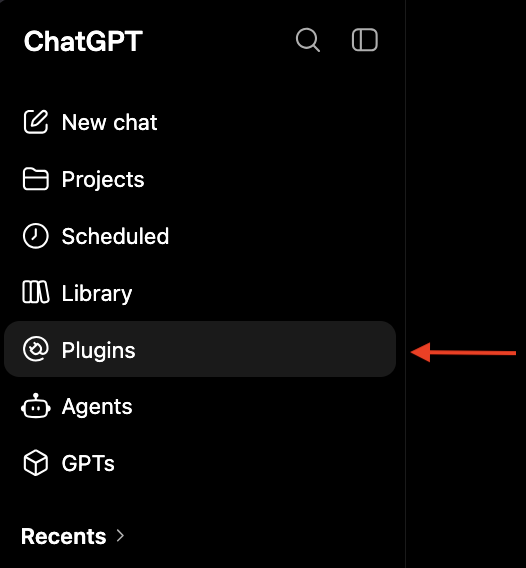
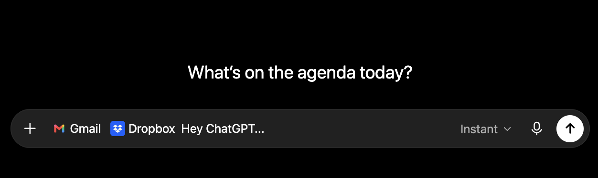

Plugins
A plugin lets ChatGPT interact with other services, making it easier for ChatGPT to start doing work you already do. For example, by enabling the Dropbox plugin, you can give ChatGPT the ability to search, read, and create new files.
Enabling a plugin

In the sidebar, select Plugins to open the plugin catalog.
Browse or search for a plugin, then press the + to install it. If the plugin needs you to sign in, you'll be handed off to that service to log in and approve access.
Using a plugin
Once a plugin is enabled, you bring it into a chat the same way you reach any tool: type @ (or use the + button) and pick it from the menu.

A prompt with the Gmail and Dropbox plugins attached.
For most plugins you don't have to tag anything. If you say “search my email for…” ChatGPT can see available plugins and find the email plugin on its own. Though, tagging it yourself points ChatGPT straight at the right place, which tends to make the answer more reliable.
The exact functions available for each plugin will vary. You can find a list of actions provided by a plugin in the Settings menu, or you could just ask ChatGPT what it can do with it.
Plugins are built in collaboration with the services they connect to, which means a plugin only lets ChatGPT do what that service chooses to offer. For example, ChatGPT can't necessarily do everything you could do in Dropbox yourself; it can only do whatever functions the Dropbox plugin provides.
Plugins we use at Epivara
These are services Epivara runs on day to day, so specific details have been noted on separate pages: